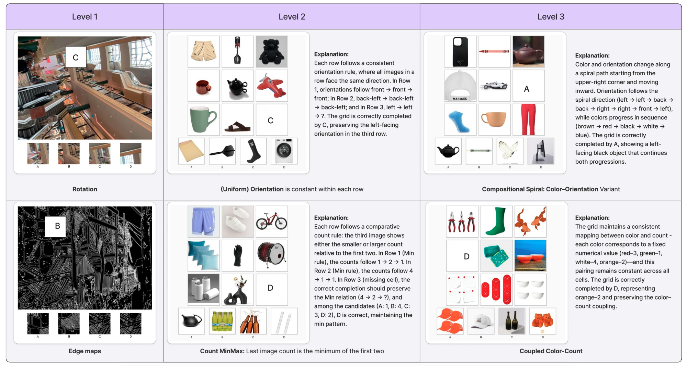

VisRes Bench
On Evaluating the Visual Reasoning Capabilities of VLMs
Benchmark overview
| Level | Name | Description |
|---|---|---|
| 1 | Perceptual completion & matching | Perceptual completion and global image matching under perturbations: blur, texture changes, occlusion, rotation. |
| 2 | Rule-based inference | Rule-based inference over a single attribute (e.g., color, count, orientation). |
| 3 | Compositional reasoning | Compositional reasoning integrating multiple visual attributes. |

Benchmark statistics
| Level | Tasks | Total examples |
|---|---|---|
| 1 | global_occlusion_50, global_occlusion_70, global_occlusion_80, edges, location_random_sampling, brightness, blur, rotation, rotation_random_sampling, edges_random_sampling, location | 11,000 |
| 2 | uniform_count, count_progression, uniform_orientation, count_2_same_1_diff, orientation_2same_1diff, uniform_color, count_arithmetic, count_minmax, orientation_3_diff, color_2same_1diff, color_3_diff, count_3_diff | 5,956 |
| 3 | spiral_color_orientation, coupled_color_count, independent_color_object_orientation, coupled_color_orientation, Independent_count_object_color | 2,522 |
| Total | 19,478 | |
| Config / task | Level | Examples |
|---|---|---|
| level_1_global_occlusion_50 | 1 | 1,000 |
| level_1_global_occlusion_70 | 1 | 1,000 |
| level_1_global_occlusion_80 | 1 | 1,000 |
| level_1_edges | 1 | 1,000 |
| level_1_location_random_sampling | 1 | 1,000 |
| level_1_brightness | 1 | 1,000 |
| level_1_blur | 1 | 1,000 |
| level_1_rotation | 1 | 1,000 |
| level_1_rotation_random_sampling | 1 | 1,000 |
| level_1_edges_random_sampling | 1 | 1,000 |
| level_1_location | 1 | 1,000 |
| level_2_uniform_count | 2 | 500 |
| level_2_count_progression | 2 | 500 |
| level_2_uniform_orientation | 2 | 458 |
| level_2_count_2_same_1_diff | 2 | 500 |
| level_2_orientation_2same_1diff | 2 | 498 |
| level_2_uniform_color | 2 | 500 |
| level_2_count_arithmetic | 2 | 500 |
| level_2_count_minmax | 2 | 500 |
| level_2_orientation_3_diff | 2 | 500 |
| level_2_color_2same_1diff | 2 | 500 |
| level_2_color_3_diff | 2 | 500 |
| level_2_count_3_diff | 2 | 500 |
| level_3_spiral_color_orientation | 3 | 350 |
| level_3_spiral_color_orientation | 3 | 464 |
| level_3_coupled_color_count | 3 | 500 |
| level_3_independent_color_object_orientation | 3 | 355 |
| level_3_coupled_color_orientation | 3 | 374 |
| level_3_Independent_count_object_color | 3 | 479 |
Main results
Accuracy (%) across levels and subtasks. Random chance = 25%. Guided prompting; thinking mode when available. Source: Hugging Face dataset card.
| Setting | GPT-5 | GPT-4o | Gemini-2.5 | Qwen3-VL-4B | Qwen3-VL-30B | Mimo-VL-7B |
|---|---|---|---|---|---|---|
| Level-1 | ||||||
| Edges | 27.17 | 23.91 | 25.00 | 16.67 | 25.00 | 22.30 |
| Location | 23.71 | 20.62 | 26.00 | 23.16 | 22.40 | 25.77 |
| Rotation | 35.42 | 26.04 | 34.38 | 37.50 | 36.05 | 29.17 |
| Brightness | 25.26 | 27.37 | 27.37 | 31.52 | 29.47 | 27.37 |
| Blur | 31.18 | 25.26 | 26.32 | 24.73 | 24.28 | 26.32 |
| Global@50% | 42.86 | 20.88 | 57.14 | 37.50 | 47.25 | 48.35 |
| Global@80% | 32.61 | 22.83 | 36.96 | 25.88 | 35.87 | 30.43 |
| Level-1 Average | 31.10 | 23.86 | 33.28 | 28.17 | 31.20 | 29.22 |
| Level-2 | ||||||
| Uniform Color | 96.00 | 21.00 | 97.00 | 66.20 | 88.00 | 78.95 |
| Uniform Count | 61.00 | 25.00 | 90.91 | 40.82 | 59.00 | 52.75 |
| Uniform Orientation | 22.22 | 25.25 | 26.53 | 26.00 | 23.00 | 19.19 |
| Count Progression | 50.00 | 13.00 | 77.00 | 37.20 | 48.00 | 36.96 |
| Count Arithmetic | 52.00 | 22.00 | 75.76 | 43.20 | 49.00 | 33.33 |
| Level-2 Average | 49.79 | 24.12 | 62.29 | 37.18 | 46.75 | 39.15 |
| Level-3 | ||||||
| Independent Color-Object-Orientation | 34.00 | 25.25 | 38.00 | 27.39 | 32.60 | 19.00 |
| Independent Count-Object-Color | 34.00 | 24.00 | 44.00 | 29.45 | 36.34 | 29.00 |
| Coupled Color-Orientation | 24.24 | 24.00 | 16.33 | 26.13 | 29.43 | 20.00 |
| Coupled Color-Count | 30.00 | 22.00 | 21.21 | 27.46 | 33.33 | 28.00 |
| Spiral Color-Count-Object | 56.00 | 30.00 | 54.17 | 28.63 | 36.00 | 33.00 |
| Level-3 Average | 34.39 | 23.86 | 33.73 | 26.31 | 31.36 | 25.17 |
Finetuning on Level-1 (Qwen2.5-VL-3B)
| Setting | Original | Finetuned | Human Baseline |
|---|---|---|---|
| Location | 24.3 | 42.8 | 94.1 |
| Blur | 23.9 | 37.5 | 84.3 |
| Brightness | 23.7 | 39.8 | 85.6 |
| Rotation | 25.5 | 50.8 | 92.0 |
| Edges | 25.1 | 33.2 | 82.6 |
| Global (50%) | 24.9 | 52.2 | 96.1 |
| Global (80%) | 23.9 | 38.6 | 98.0 |
| Average | 24.5 | 43.7 | 90.4 |
Single-attribute recognition (perceptual grounding)
Accuracy (%) when models report a single attribute (color, orientation, or count) for one grid cell.
| Attribute | GPT-4o | GPT-5 |
|---|---|---|
| Color | 84.6 | 97.6 |
| Orientation | 39.8 | 49.6 |
| Count | 72.4 | 94.2 |
Impact of thinking mode
Accuracy (%) with thinking enabled (✓) vs disabled (✗). Open-source models improve substantially with thinking.
| Level | GPT-5 (high) | GPT-5 (low) | Mimo-VL ✓ | Mimo-VL ✗ | Qwen3-4B ✓ | Qwen3-4B ✗ | Qwen3-30B ✓ | Qwen3-30B ✗ |
|---|---|---|---|---|---|---|---|---|
| Level-1 | 32.61 | 31.43 | 29.22 | 23.91 | 28.17 | 23.16 | 31.20 | 23.60 |
| Level-2 | 49.79 | 47.01 | 39.15 | 26.68 | 37.18 | 24.08 | 46.75 | 28.25 |
| Level-3 | 34.39 | 32.89 | 25.17 | 25.23 | 26.31 | 23.50 | 31.36 | 24.00 |
Impact of image resolution (GPT-5)
Accuracy (%) at different input resolutions. All levels improve with higher resolution.
| Resolution | Level-1 | Level-2 | Level-3 |
|---|---|---|---|
| 512×512 | 45.17 | 42.83 | 31.63 |
| 1024×1024 | 54.01 | 49.61 | 35.48 |
| 2048×2048 | 56.51 | 48.99 | 40.07 |
How to evaluate your models
VisRes Bench is integrated into lmms-eval, the unified evaluation toolkit for multimodal models. Use it to run reproducible evaluations with the same pipeline as in the paper.
Install and run:
git clone https://github.com/EvolvingLMMs-Lab/lmms-eval.git cd lmms-eval && uv pip install -e ".[all]" # Run evaluation (example: Qwen2.5-VL on VisRes Bench) python -m lmms_eval \ --model qwen2_5_vl \ --model_args pretrained=Qwen/Qwen2.5-VL-3B-Instruct \ --tasks visres_bench \ --batch_size 1
See the lmms-eval repository for supported models, task variants (e.g. by level or config), and full documentation.
Citation
@article{visres2025,
title={VisRes Bench: On Evaluating the Visual Reasoning Capabilities of VLMs},
author={Malagurski T{\"o}rtei, Brigitta and Dahou, Yasser and Huynh, Ngoc Dung and Para, Wamiq Reyaz and L{\^e} Khac, Ph{\'u}c H. and Singh, Ankit and Chaybouti, Sofian and Narayan, Sanath},
journal={arXiv preprint arXiv:2512.21194},
year={2025}
}